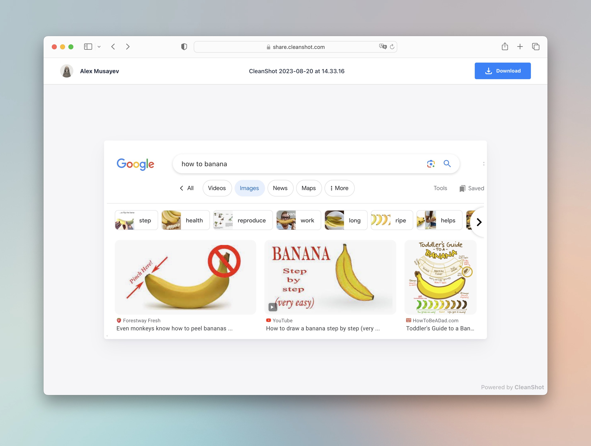

Automating image management for a static site
TLDR: This post demonstrates using an arbitrary image-sharing tool and some custom code (like a one-hour effort) to simplify picture publishing with a static site generator.
Okay, let's make the images publishing process less tedious for a generic static site.
There are two primary use cases involved:
1. Capturing an image from an arbitrary external source to some interim storage.
This is already an automated operation. There are tools for that. My recent favorite is CleanShot X, which can take screenshots and upload arbitrary images from a file or clipboard to the cloud, providing a quick short link for sharing. Silky-smooth UX. Do recommend.
2. Adding images on a page.
Generally, adding an image to a Markdown page is as easy as pasting its URL into contents like so: . Let's make this work with CleanShot short URLs.
CleanShot URLs open an HTML page that downscales your screenshot to fit the browser window, adds your branding, etc.

So here is the flow:
- Download the image file from the CleanShot share page.
- Replace CleanShot URLs with local image paths during HTML generation.
Turn  into <img src="/image.jpg" alt="">.
The following example demonstrates how to use redcarpet gem, a popular Markdown parser for Ruby, for this purpose:
# Markdown renderer class with a custom processing logic for image tags
class CustomMarkdownRenderer < Redcarpet::Render::HTML
include Rouge::Plugins::Redcarpet
attr_reader :images_cache
def initialize(images_cache:, extensions: {})
super(extensions)
@images_cache = images_cache
end
def image(link, title, alt_text)
file_name = images_cache.fetch(link)
"<img src=\"#{file_name}\" alt=\"#{alt_text}\" title=\"#{title}\">"
end
end
class ImagesCache
def fetch(url)
# If URL is not found in the local cache
# Download the image file from CleanShot
# Save the image to a local directory
# Return relative path to the local image copy, suitable for <img> tag
end
end
# Rendering HTML for a sample page
Redcarpet::Markdown.new(
CustomMarkdownRenderer.new(images_cache: ImagesCache.new),
fenced_code_blocks: true,
highlight: true
).render(File.read("site-content/page.md"))
ImagesCache class suppose to build an arbitrary local directory structure to keep image files with unique URL-friendly names:
$ tree ~/Dropbox/Images
.
├── 20230720_4288
│ └── 43688db1c5851f1a8382a311bd0dc72b.jpg
├── 20230730_4361
│ └── 6c53cf2f2916480f9374471f64a7640b.jpg
│ └── e28f897f968246d1bd45c25aabc32bf8.jpg
└── index.json
And an index for quick look-up for the cached files using the original URL from the Markdown source as the key. DB table, or a CSV, or JSON file, whatever:
$ cat index.json
{
"https://share.cleanshot.com/Yp166HDZ": "20230720_4288/43688db1c5851f1a8382a311bd0dc72b.jpg",
"https://share.cleanshot.com/qZ5T6q7g": "20230730_4361/6c53cf2f2916480f9374471f64a7640b.jpg",
"https://share.cleanshot.com/35WJDTGz": "20230730_4361/e28f897f968246d1bd45c25aabc32bf8.jpg"
}
The example above explains how the images appear on this site pages. So far, so good.
Somewhat related: